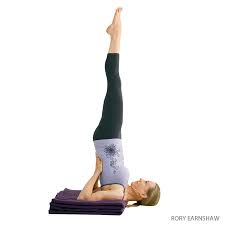

Stretches the spine, shoulders, and hamstrings Stimulates abdominal organs such as the liver and kidneys Improves digestion
Supported Shoulderstand

Pose Information
Sanskrit Name : Salamba Sarvangasana
Pose Level : 1
Contraindications and Cautions
Diarrhea
Headache
High blood pressure
Menstruation
Neck injury
Pregnancy: If you are experienced with this pose, you can continue to practice it late into pregnancy. However, don't take up the practice of Sarvangasana after you become pregnant.
Salamba Sarvangasana is considered to be an intermediate to advanced pose. Do not perform this pose without sufficient prior experience or unless you have the supervision of an experienced instructor. Some schools of yoga recommend doing Salamba Sirsasana before Salamba Sarvangasana, others vice versa. The instruction here assumes the former order.
Benefits
Calms the brain and helps relieve stress and mild depression
Stimulates the thyroid and prostate glands and abdominal organs
Stretches the shoulders and neck
Tones the legs and buttocks
Improves digestion
Helps relieve the symptoms of menopause
Reduces fatigue and alleviates insomnia
Therapeutic for asthma, infertility, and sinusitis